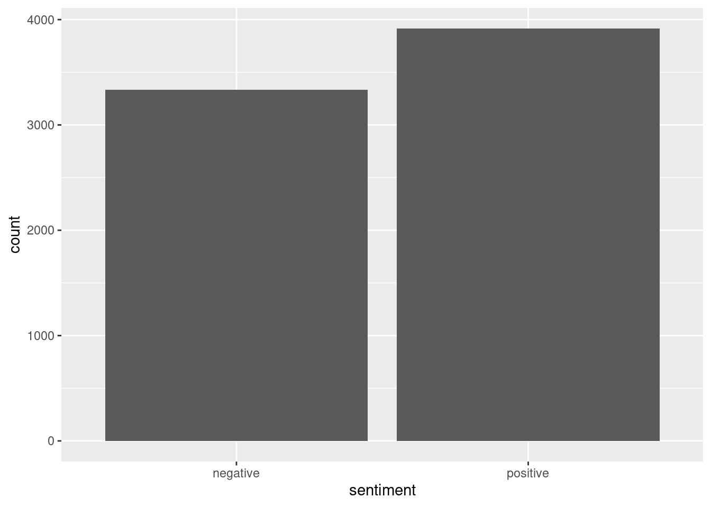
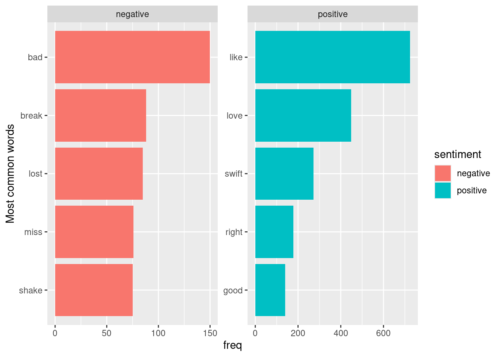
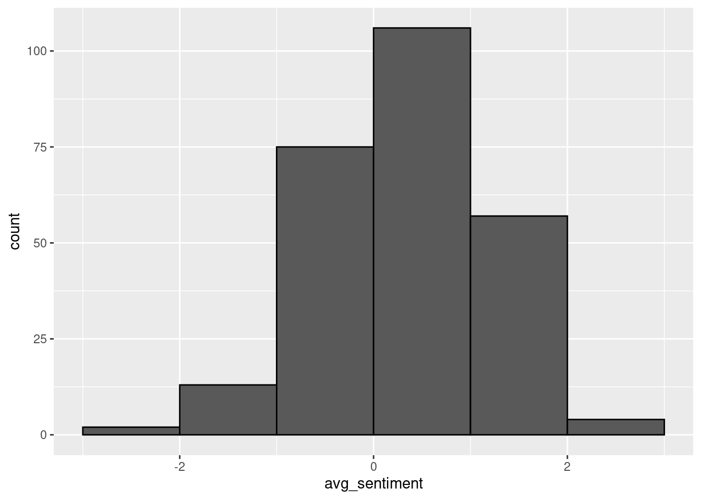
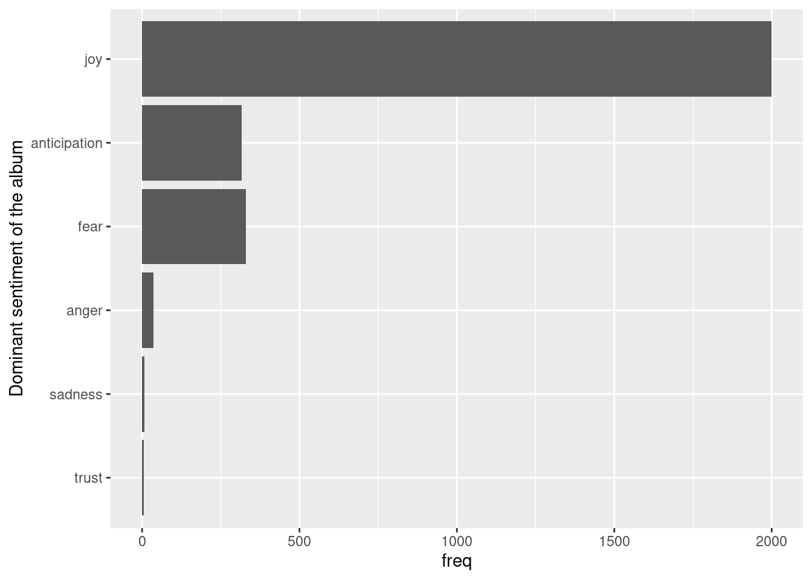

Sentiment Analysis
Learning objectives
- Apply different sentiment lexicons to analyze text data.
- Visualize sentiment distributions and dominant emotions in text data.
We will use the textdata package for lexicons of sentiments:
Then load all packages needed for this worksheet:
We will continue exploring lyrics of Taylor Swift’s songs:
# Upload data from GitHub
taylor_songs <- read_csv("https://raw.githubusercontent.com/shaynak/taylor-swift-lyrics/main/songs.csv")
# Take a look
head(taylor_songs)Try it! Split the lyrics of each song into words with unnest_tokens.
Sentiment analysis uses a scored lexicon of words, with emotion scores or labels (negative vs. positive) indicating each word’s emotional content. Although this approach will miss context-dependent sentiments, such as sarcasm, when performed on large numbers of words, overall, it can provide some insights. We can use the tidytext function get_sentiments() to load a lexicon for sentiments of a large number of words. Here are a few examples:
1. Positive/Negative sentiments
In the bing lexicon, each word was attributed a positive or negative sentiment.
Try it! Match the words from the lyrics and their corresponding sentiments (if available). Are Taylor Swift’s lyrics mostly positive or negative?
words |>
# Only keep the words with a corresponding sentiment with inner_join()
inner_join(get_sentiments("bing"), by = "word") |>
# Compare each sentiment
group_by(sentiment) |>
summarize(freq = n()) |>
# Calculate proportion
mutate(prop = freq / sum(freq))## Warning in inner_join(words, get_sentiments("bing"), by = "word"): Detected an unexpected many-to-many relationship between `x` and
## `y`.
## ℹ Row 74415 of `x` matches multiple rows in `y`.
## ℹ Row 3805 of `y` matches multiple rows in `x`.
## ℹ If a many-to-many relationship is expected, set `relationship =
## "many-to-many"` to silence this warning.# or use a bar graph
words |>
# Only keep the words with a corresponding sentiment with inner_join()
inner_join(get_sentiments("bing"), by = "word") |>
# Make a plot
ggplot() +
geom_bar(aes(x = sentiment))## Warning in inner_join(words, get_sentiments("bing"), by = "word"): Detected an unexpected many-to-many relationship between `x` and
## `y`.
## ℹ Row 74415 of `x` matches multiple rows in `y`.
## ℹ Row 3805 of `y` matches multiple rows in `x`.
## ℹ If a many-to-many relationship is expected, set `relationship =
## "many-to-many"` to silence this warning.
Slightly more positive words!
Bonus question: Which five words contributed the most to each sentiment?
# Words for each sentiment
words |>
# Only keep the words with a corresponding sentiment with inner_join()
inner_join(get_sentiments("bing"), by = "word") |>
# For each word, in each sentiment
group_by(sentiment, word) |>
summarize(freq = n()) |>
# Keep the top 5
slice_max(freq, n = 5) |>
# Make a plot (same type as shown in the slides)
ggplot() +
geom_bar(aes(y = fct_reorder(word, freq), x = freq, fill = sentiment),
stat = "identity") +
facet_wrap(~sentiment, scales = "free") +
labs(y = "Most common words")## Warning in inner_join(words, get_sentiments("bing"), by = "word"): Detected an unexpected many-to-many relationship between `x` and
## `y`.
## ℹ Row 74415 of `x` matches multiple rows in `y`.
## ℹ Row 3805 of `y` matches multiple rows in `x`.
## ℹ If a many-to-many relationship is expected, set `relationship =
## "many-to-many"` to silence this warning.
Note that the word “swift” probably refers to her last name instead of the adjective.
2. Scoring sentiments
In the afinn lexicon, each word was attributed a score: negative scores represent negative sentiments whereas positive scores represent positive sentiments with different intensities.
Try it! Find the average sentiment (with the mean) for each song. How does the mean sentiment vary from song to song? Which songs have the highest score?
words |>
# Assign a scored sentiment to a word if available
inner_join(get_sentiments("afinn"), by = "word") |>
# Summarize average sentiment for each song
group_by(Title) |>
summarize(avg_sentiment = mean(value)) |>
# Make a plot
ggplot() +
geom_histogram(aes(x = avg_sentiment),
binwidth = 1, center = 0.5, color = "black")
# Check the highly positive songs
words |>
# Assign a scored sentiment to a word if available
inner_join(get_sentiments("afinn"), by = "word") |>
# Summarize average sentiment for each song
group_by(Title) |>
summarize(avg_sentiment = mean(value)) |>
slice_max(n = 5, avg_sentiment)There are more songs with a positive sentiment between 0 and 1. Some songs are more positive with an average score above 2!
3. Using a wide range of sentiments
In the nrc lexicon, each word was associated with a sentiment and a single word can carry multiple sentiments. See for example the word celebrity:
Try it! Find the dominant sentiment for each album (beyond positive/negative). Which dominant sentiment is the most common over all the albums?
words |>
# Assign a scored sentiment to a word if available
inner_join(get_sentiments("nrc"), by = "word") |>
# Summarize average sentiment for each song
group_by(Album, sentiment) |>
summarize(freq = n()) |>
# Remove positive or negative sentiments
filter(!(sentiment %in% c("positive", "negative"))) |>
# Top sentiment per album
slice_max(n = 1, freq) |>
# Make a plot
ggplot() +
geom_bar(aes(y = fct_reorder(sentiment, freq),
x = freq), stat = "identity") +
labs(y = "Dominant sentiment of the album")## Warning in inner_join(words, get_sentiments("nrc"), by = "word"): Detected an unexpected many-to-many relationship between `x` and
## `y`.
## ℹ Row 14 of `x` matches multiple rows in `y`.
## ℹ Row 2028 of `y` matches multiple rows in `x`.
## ℹ If a many-to-many relationship is expected, set `relationship =
## "many-to-many"` to silence this warning.
More albums have “joy” as the dominant sentiment!
Recommended Resources
- Worksheet keys are posted at the end of the week on Canvas under Programming Tools.
- Recommended readings: Text mining
- More options on Sentiment analysis with tidy data